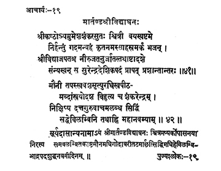

19. आचार्य - 19 - मार्ताण्ड श्रीविध्याघणः
श्रीकण्ठोय ••• प्रापत्प्रशान्तान्तरः ॥ ४१ ॥
मौनीतपः ••• महानवम्याम् ॥ ४२ ॥
The preceptor Śrīkaṇṭha, son of Umeśa Śaṅkara, suffering from leprosy, worshipped Sūrya everyday with a thousand salutations to get rid of the disease and became healthy due to the japa of Śrīvidyā, renounced at the age of eighteen and reached with a tranquil mind the holy feet of the preceptor Surendradeśika.
Avowed to rigorous practice of adhering to silence, austere, blessed with a virtue of opting his death day at his will, governed the seat of the Chief of Preceptors for thirteen years and after deputing Śaṅkarendra with due instructions, reached the beatitude on the ninth day of the bright fortnight in the month of Bhādrapada of the year Hevilambi.
